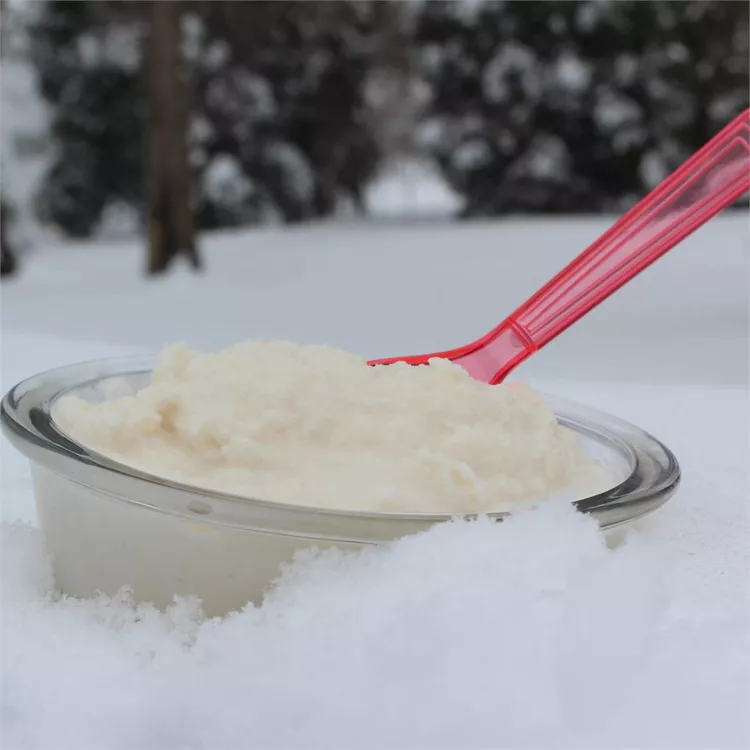

Sweetened Condensed Milk for Snow Ice Cream

Satisfy Your Sweet Tooth With This DIY Frozen Dessert
I needed a sweetened condensed milk for Snow Ice Cream when we were snowed in and couldn't get to the store. I didn't have the right ingredients for any recipe I found so I improvised my own. This made the best Snow Ice Cream we ever ate!
Ingredients
- ½ cup milk
- 10 tablespoons powdered French vanilla-flavored coffee creamer
- ¾ cup white sugar
- 24 cups clean fresh snow, or as needed
Steps
- Whisk the milk, powdered creamer, and sugar together in a saucepan, and place over medium heat. Bring to a boil, whisking constantly, and cook until thickened, 10 to 12 minutes. Set the mixture aside, and cool thoroughly (mixture will thicken as it cools).
- Place half the snow into a large mixing bowl, and pour the milk mixture over the snow. Gently stir the snow with the milk mixture until thoroughly combined. Continue to spoon in more snow, about 1 cup at a time, until the snow ice cream has the consistency of soft-serve ice cream. Serve immediately.